The campaign in play order, then the full field manual: arsenal, army, leaders and boons, every number live from the game data. Type in any box to leave a note, then SAVE NOTES to download them.
Adaptable, outnumbered, unwilling to leave. Alien drives on human hulls.
Late to the stars and outnumbered on every front. What humanity brought to integration was not doctrine or appetite but adaptability: the willingness to bolt alien technology onto human frames and make it work. Neither selfless nor devouring. Simply unwilling to leave.
RESILIENT +10 lives and +10% to every tower statistic.
FIELD DOCTRINE Every kill banks requisition and cuts the price of your next send, spent when you send. A body of yours that kills another grows permanently harder. Humanity learns: the line that holds pays for the line that advances.
dmg 6 · rate 1.5/s · range 3.2 · physicalCheap, fast, reliable, and it feeds itself: a Bolt that kills has the case out before the body drops, so most of the next round is already paid for. EARLY-GAME by design: the refund is worth most in the waves where one round is enough. The gentlest price curve in the arsenal is what makes a wall of Bolts a real strategy; the breech is what makes the wall keep pace.Solar militia standard, designed after the first off-world logistics split.Canon: Cheap reliability and kill-reload represent industrial standardization.THE LADDER: 2 upgrades, 6 talents, 2 branches
MK II upgrade 1, 8g
MK III upgrade 2, 16g
HOLLOWPOINT +45% damage, −15% fire rate.
AUTOLOADER +35% fire rate.
LONG BARREL +30% range, +12% damage.
AP CORE Ignores 40% of armour.
BRASS CATCHER A kill returns 12% more of the reload.
KINETIC SLUG +55% damage but −20% fire rate.
VOLLEY tier 4 branch, 29g. Fans three 30-damage bolts at 2.0/s; kills refund 13% of the reload. Little bolts, hungry breech.
PIERCER tier 4 branch, 29g. Drives 88 through four bodies, ignoring 50% armour, stripping 3; a kill refunds half the reload.
dmg 4 · rate 1/s · range 3 · magic · splash 1.1Low damage, high value. Chills an area and multiplies the window every other tower gets to work in.A lunar volatile-control projector repurposed to arrest movement.Canon: Humans weaponize environmental engineering.THE LADDER: 2 upgrades, 6 talents, 2 branches
DEEP CHILL upgrade 1, 11g
PERMAFROST upgrade 2, 19g
WIDE FIELD +40% splash radius.
DEEP FREEZE +35% slow strength and duration.
COLD SNAP 10% chance to freeze solid.
FROSTBITE Chilled targets take +25% damage.
GLACIAL CORE +30% damage and +20% slow.
LINGERING FROST Slow duration +80%.
GLACIER tier 4 branch, 34g. Slows 68% for 2.8s in a 1.6-tile splash; 22% chance of a 0.9s freeze. Maximum control.
SHATTER tier 4 branch, 34g. Hits for 62, doubled against anything slowed or frozen; its own 1.4 splash slows 50% for 2.2s.
MORTARGround splash artillery · 🔥 FIRE · 28g, growth ×1.66
dmg 16 · rate 0.55/s · range 3.9 · physical · splash 1.25Arcing shells, and no sight of its own worth the name. It does not need one: anything another of your weapons currently holds, the Mortar will drop a shell on, well past its own reach. LATE-GAME by design: on a bare board it is a short bombard, and it grows with every gun you build in front of it. Still blind to anything airborne.Habitat-defense artillery that fires from allied sensor tracks.Canon: It depends on the broader Human observation network.THE LADDER: 2 upgrades, 6 talents, 2 branches
HEAVY upgrade 1, 14g
BATTERY upgrade 2, 26g
HEAVY SHELL +40% damage, −12% fire rate.
QUICK FUSE +40% fire rate.
WIDE BLAST +45% splash radius.
SHRAPNEL Blasts strip 5 armour.
FORWARD OBSERVER Reaches 0.9 tiles further on a spotter call.
BARRAGE +2 submunitions on impact.
SIEGE tier 4 branch, 45g. One 175-damage shell, 2.3 splash, stuns 0.45s; reaches 2.2 tiles further on a spotter call.
CLUSTER tier 4 branch, 45g. Airbursts into four 72-damage bomblets, 1.3 splash each, scattered over 1.5 tiles. Rain, not a shell.
ARCCurrent that runs the lane · ⚡ STORM · 32g, growth ×1.74
dmg 12 · rate 0.95/s · range 3.1 · magicAn alien capacitor on a human mast, earthed straight into the road. The discharge does not hop from body to body: it RUNS along the lane from where it struck, forward and back, through everything standing on that stretch of it. CONDITIONAL: devastating against a column, nearly wasted on a crowd that has spread out, so the shape of your maze decides what it is worth. Magic damage: armour is irrelevant.A captured Lattice capacitor grounded through a Human mast.Canon: Reverse engineering turns alien field behavior into lane geometry.THE LADDER: 2 upgrades, 6 talents, 2 branches
CONDUIT upgrade 1, 17g
DYNAMO upgrade 2, 31g
SUPERCONDUCTOR The current loses only 10% per tile.
HIGH TENSION +40% damage.
EARTH SPIKES The current runs 2 tiles further.
GROUNDING RODS The current strips 4 armour.
OVERVOLT +35% damage, −10% fire rate.
SECOND EARTH The current runs 2.6 tiles further.
STORM tier 4 branch, 52g. The current runs 6 tiles each way down the lane, 62 damage keeping 87% per tile.
OVERLOAD tier 4 branch, 52g. 155 damage running 2 tiles at 68% per tile, stripping 6 armour from everything struck.
dmg 23 · rate 1.1/s · range 4.2 · physical · splash 1.4CANNOT TARGET GROUND. What it does instead is bring things DOWN: a hit flyer is crippled onto the deck for a few seconds, crawling, where every ground-only gun on the board can finally reach it. CONDITIONAL: worth nothing against a wave with no sky, and the reason the exact mirror of Mortar is also its partner.Anti-transmedium interception gun created after conventional targeting repeatedly lost low-signature craft.Canon: It forces aerial threats into the shared battlespace.THE LADDER: 2 upgrades, 6 talents, 2 branches
AUTOCANNON upgrade 1, 14g
SKY BATTERY upgrade 2, 26g
PROXIMITY FUSE +45% splash radius.
HIGH VELOCITY +45% damage.
RADAR LINK +40% range.
FLAK CURTAIN Slows flyers 45%, and holds them down 0.4s longer.
CURTAIN FIRE +35% damage and +25% splash.
INTERCEPTORS +60% fire rate.
SKYSHRED tier 4 branch, 43g. Bursts for 240 across a 2.1 splash, grounding survivors 1.3s where the ground guns wait.
SEEKER SWARM tier 4 branch, 43g. Homing seekers at 3.2/s for 82 each, slowing flyers 40% and grounding them 0.5s per hit.
CANISTERArmour-stripping gas · ☠ VENOM · 27g, growth ×1.64
dmg 9 · rate 0.6/s · range 3.7 · magic · splash 1.5Standard-issue gas shells on a standard-issue tube. The gas eats plate every stack strips armour with no talent spent on it, and it burns a share of what the target STARTED with rather than what it has left, so it keeps working on a giant that venom has already given up on. It buys that with damage: a third of TOXIN's percentage, and nothing at all against a flier.Mining and hull-stripping aerosols adapted for armored targets.Canon: A utilitarian Human tool with serious ethical restrictions outside combat zones.THE LADDER: 2 upgrades, 6 talents, 2 branches
CHOKING upgrade 1, 15g
BLISTER upgrade 2, 27g
WIDE PATTERN +40% blast radius.
HEAVY DOSE +45% gas potency.
HE FILLER +45% impact damage.
CAUSTIC +2 armour stripped per gas stack.
QUICK LOADER +35% fire rate.
DEEP STOCK +2 gas stacks and 20% slow.
SATURATION tier 4 branch, 44g. The whole approach becomes uninhabitable, and nothing crossing it keeps its plate. 20 armour off at full stacks.
CONCENTRATE tier 4 branch, 44g. A smaller cloud that strips 18 armour and eats a fixed share of whatever walks into it.
dmg 17 · rate 0.9/s · range 3.5 · magicA void emitter pulled off a wreck and bolted to a human mount. Nobody who fires it can explain it. It leaves what it hits easier to kill.Hungry void hardware recovered from a wreck and mounted without full theoretical understanding.Canon: Humanity gains strength by domesticating what it does not yet comprehend.THE LADDER: 2 upgrades, 6 talents, 2 branches
FIELD FIT upgrade 1, 18g
REBUILT upgrade 2, 31g
SALVAGE CORE +45% damage.
FIELD TUNING +35% fire rate.
UNMAKING +10% to the vulnerability it leaves.
BORED BARREL Ignores a further 30% of armour.
RANGEFINDER +30% range and +12% damage.
LONG DECAY The vulnerability lasts 2s longer.
UNMAKER tier 4 branch, 50g. Hits for 205 through 50% of armour; targets take 34% more damage for 3.5s.
REPEATER tier 4 branch, 50g. Hits for 84 at 2.1/s with 0.8-tile splash; adds 14% vulnerability for 2.2s.
QUARTERMASTERSupply: makes gold go further · ✦ RADIANT · 38g, growth ×2.15
range 3 · noneHuman logistics, which is to say paperwork with a roof on it. It mints nothing at all. Every upgrade bought on a tower inside the depot is requisitioned rather than purchased, and a lump sum lands when a wave ends. LATE-GAME by design: a discount is worth what the thing discounted costs, and nothing bought in wave two costs enough to be worth saving on.A deployable requisition office descended from Solar emergency logistics.Canon: Paperwork becomes a combat multiplier.THE LADDER: 2 upgrades, 6 talents, 2 branches
DEPOT upgrade 1, 19g
LOGISTICS upgrade 2, 34g
REQUISITION +70% wave payment.
FORWARD DEPOT A further 5% off upgrades inside it.
WIDE DEPOT +40% radius.
FIELD WORKSHOP A further 6% off upgrades inside it.
BULK ORDER +120% wave payment.
FULL LEDGER +155 wave payment and a further 4% off upgrades.
COMMISSARY tier 4 branch, 55g. Pays 9 gold when each wave ends; upgrades in range cost 12% less.
CONVOY tier 4 branch, 55g. Upgrades bought in range cost 32% less; pays 4 gold per wave.
RAMPARTProjects a lane barricade · ◆ KINETIC · 25g, growth ×1.6
range 2.6 · noneRaises a physical barricade across the lane. Ground enemies must stop and batter it down: but a wall holds only so many at once, and the rest squeeze past.Prefabricated habitat shielding converted into lane barricades.Canon: Settlement technology literally becomes defense.THE LADDER: 2 upgrades, 7 talents, 2 branches
BULWARK upgrade 1, 19g
REDOUBT upgrade 2, 36g
GRANITE +50% barricade health.
PREFAB Rebuilds 30% faster.
SPIKES Attackers take 12 damage per second.
LONG WALL +35% placement reach.
DEEP RANKS The wall holds 2 more attackers at once.
IRONBOUND +70% barricade health.
ALARM NET Enemies at the wall take +20% damage from all towers.
CITADEL tier 4 branch, 48g. One 1900-health wall holding 4 attackers; spikes deal 35/s; rebuilds in 7s. It bites back.
PHALANX tier 4 branch, 48g. Two 650-health walls, each holding 2 attackers; rebuilds in 5s. Depth over mass.
ARBALESTDamage grows while it waits · ◆ KINETIC · 26g, growth ×1.6
dmg 15 · rate 0.5/s · range 5 · physicalA siege bow that winds tighter the longer it holds its shot. Fired hastily it stings; fired after a long quiet, it obliterates. The mirror of every rapid-fire tower.A patient magnetic siege system that stores energy while it waits for a legal firing solution.Canon: Human doctrine rewards preparation over exotic automation.THE LADDER: 2 upgrades, 6 talents, 2 branches
CRANEQUIN upgrade 1, 20g
SIEGEBOW upgrade 2, 38g
STIFF SPRING Winds 30% faster.
HEAVY BOLT +40% damage.
DEEP DRAW +3 to the wind ceiling.
BODKIN Ignores 35% of armour.
PARAPET +30% range.
DEADEYE Fully-wound shots always crit x2.
LONGSHOT tier 4 branch, 45g. A full 16 wind multiplies its 66 damage seventeenfold, reaching 7 tiles. Patience in city blocks.
SNAPSHOT tier 4 branch, 45g. Winds 0.9 per second to a cap of 8, each point adding another 52 damage.
BOMBARDSiege battery: blind up close · 🔥 FIRE · 48g, growth ×1.82
dmg 95 · rate 0.3/s · range 9 · physical · splash 1.8Board-length shells with huge splash; overkill damage rolls to the next enemy. Blind inside 3 tiles and to air.A compact lunar mass-driver battery.Canon: The largest Human gun is powerful because the coalition can feed and spot it.THE LADDER: 2 upgrades, 6 talents, 2 branches
DEMICANNON upgrade 1, 29g
BASILISK upgrade 2, 53g
SHELL HOIST +40% fire rate.
DOUBLE CHARGE +45% damage, −10% fire rate.
ROLLING CARRIAGE Shrinks the dead zone by 1 full tile.
THROUGHSHOT A further 25% of surplus damage rolls onward.
GUN PIT +35% splash radius.
FULL MAGAZINE +30% damage and +15% fire rate.
CULVERIN tier 4 branch, 78g. 900 damage at 12 range, 100% of overkill rolling onward. Blind inside 3.5 tiles.
DRUMFIRE tier 4 branch, 78g. 340-damage shells at 0.85/s across a 2.4 splash. The dead zone shrinks to 2 tiles.
COLDFRONTManufactures weather: the field itself slows · ❄ FROST · 43g, growth ×1.95
range 3.5 · noneNever fires. Its field stacks a slow that deepens with exposure, caps, and follows enemies out. Bosses chill at half rate.A climate-control field built from colony weather infrastructure.Canon: Humans manufacture local conditions rather than merely endure them.THE LADDER: 2 upgrades, 6 talents, 2 branches
DEEP WINTER upgrade 1, 26g
ICE AGE upgrade 2, 49g
WIDE FRONT +35% field radius.
OVERCOOLED Exposure builds 35% faster.
BLACK ICE +0.10 to the exposure ceiling.
LONG WINTER The cold follows them out: sheds 40% slower.
SNOWBLIND Bodies at the ceiling take +20% damage.
WINDCHILL +25% radius, and exposure builds 15% faster.
WHITEOUT tier 4 branch, 70g. Slow deepens 22% per second to 80%; at the cap a 1.2s freeze, once per body.
SHATTERFRONT tier 4 branch, 70g. Slow builds 18% per second to 65%; bodies at the cap take 35% more damage.
Trooper66 hp · 2 armour · speed 1.15 · bounty 10 · 1 live
Line infantry on alien drives. Outnumbered on every front and still walking towards you.Formation: Solar Line Corps infantryHolds ground and proves Human conquest is institutional, not merely technological.DOCTRINE TALENTS: 6
SCAVENGE Salvages 50% more armour off every wreck.
QUARTERMASTER A summon costs 15% less.
PLATE SHOP +3 armour before a wreck is even found.
Foo Fighter92 hp · 2 armour · speed 1.5 · bounty 16 · 1 live
FLYINGweak to STORMThe lights bomber crews reported over Europe in 1944. They were ours then too. It flies the maze instead of walking it.Formation: Belt-built close support vehicleMobility and field improvisation.DOCTRINE TALENTS: 6
SCAVENGE Salvages 50% more armour off every wreck.
QUARTERMASTER A summon costs 15% less.
PLATE SHOP +3 armour before a wreck is even found.
weak to STORM · resists FROSTFlying black since decades before anyone was told. Bolted-on alien plate, heated against cold, and frost barely marks it.Formation: Breach armor detachmentTurns survival engineering into assault doctrine.DOCTRINE TALENTS: 6
SCAVENGE Salvages 50% more armour off every wreck.
QUARTERMASTER A summon costs 15% less.
PLATE SHOP +3 armour before a wreck is even found.
Black Manta405 hp · 9 armour · speed 0.85 · bounty 46 · 3 lives
Anchored assault armour off a programme that never had a public name. It cannot be displaced and barely slowed: you have to out-damage it.Formation: Rapid orbital cavalryHuman settlement can become occupation in a single landing.DOCTRINE TALENTS: 6
SCAVENGE Salvages 50% more armour off every wreck.
QUARTERMASTER A summon costs 15% less.
PLATE SHOP +3 armour before a wreck is even found.
AURA: +9 armour within 2.6 tiles. The big quiet triangle everyone photographed and nobody was believed about. Humanity endures by standing closer together.Formation: Command standard and discipline auraA Human banner is law, logistics, and culture arriving together.DOCTRINE TALENTS: 6
SCAVENGE Salvages 50% more armour off every wreck.
QUARTERMASTER A summon costs 15% less.
PLATE SHOP +3 armour before a wreck is even found.
6 commanders under this banner. CADRE, the unaligned baseline everyone starts with, lives on the index.
◈ DIR. REYESThe Archivist
Fights the long game. Reyes turns the draft itself into a weapon: more choices, more often, and a board that grows stronger with every doctrine filed away.PERPETUAL STUDY: Command upgrades are drafted every 4 waves instead of 5, and you are offered 4 options instead of 3.Signature:CANISTER + RECLAIMER with Trooper + Foo FighterDirector of the Open Archive Combat IndexWants: Make contradictory records useful without pretending they agree.Breaks on: She will expose any secret except the one proving how often Humanity edited its own disclosure history.I have read every battle you have ever fought. This one ends the same way.ABILITIES AND TECH: 2 abilities, 9 tech nodes
⚡ OVERCLOCK Every tower you own fires 60% faster and hits 25% harder for 7s. (34s cooldown, 7s)
◎ DAMPENING FIELD Everything walking at you is slowed 35% and loses 25% of its damage for 8s. (40s cooldown, 8s)
CROSS-REFERENCE +1 option on every draft.
RAPID STUDY Drafts arrive every 3 waves.
MASTER ARCHIVE +1 further option, and +3% damage per upgrade held.
COMPENDIUM +3% tower damage per command upgrade you hold.
DEEP INDEX +4% more tower damage per upgrade held.
OMNISCIENCE +5% more tower damage per upgrade held.
FIELD NOTES Begin each battle holding 1 random command upgrade.
PRIOR ART Begin with 2 more command upgrades.
TOTAL RECALL Begin with 3 more and +1 draft option.
Wins on logistics. Okafor makes width affordable when everyone else is priced into a handful of towers.BULK CONTRACTS: Per-copy tower price growth is 30% gentler, and you start with 25% more gold.Signature:QUARTERMASTER + MORTAR with Aurora + TR-3BArchitect of interoperable Solar logisticsWants: Make Human expansion impossible to starve or embargo.Breaks on: Every standard he exports quietly makes frontier worlds dependent on Human industry.I priced your defeat before you arrived. It was cheap.ABILITIES AND TECH: 2 abilities, 9 tech nodes
⌖ FOCUS FIRE Towers gain 45% damage and 30% range for 6s. (40s cooldown, 6s)
⛨ BULWARK AIMED at a lane. Throws up a wall that holds 4 attackers for 11s and grinds what it holds. It no longer returns lives: a wall buys time, it does not undo a leak. (40s cooldown, 11s)
REQUISITION +12% gold from every kill.
SUPPLY LINE +18% more kill gold.
WAR CHEST +25% more kill gold and +25 starting gold.
BARGAINING Price growth a further 10% gentler.
STANDARDISED And another 12% gentler.
MASS PRODUCTION And another 15%. Towers become genuinely spammable.
Pushes single structures past their rated limits. Tanaka would rather field five monsters than twenty soldiers.REDLINE: Ascension costs 25% less, and SURGE triggers on EVERY ascension instead of every second one.Signature:BOLT + ARC with Foo Fighter + Black MantaIllegal ascension engineer turned war heroWants: Prove no technology remains sacred once it can be measured.Breaks on: Her victories normalize dangerous escalation and leave generations maintaining devices designed to fail after she is gone.My towers are already past their rated limits. So am I.ABILITIES AND TECH: 2 abilities, 9 tech nodes
⚡ OVERCLOCK Every tower you own fires 60% faster and hits 25% harder for 7s. (34s cooldown, 7s)
☁ SMOKESCREEN AIMED at a lane. Blinds everything at the point, then seeds 5 mines across it for 10s. (36s cooldown, 10s)
TOLERANCES Ascension costs a further 10% less.
COOLANT And another 12% less.
NO LIMITS And another 15% less.
SURGE TAP +2% tower damage per ascension you own.
FEEDBACK +3% more per ascension.
CRITICALITY +4% more per ascension.
DEEP TUNE Towers at ascension 3+ fire 10% faster.
RESONANCE +14% more.
SINGULAR FOCUS +18% more, and ascension damage scales harder.
Builds fast and rebuilds faster. O'Ryan treats a lost tower as a delay, not a defeat.FIELD WORKSHOP: Towers begin one level higher, and upgrades cost 15% less.Signature:RAMPART + BOMBARD with Aurora + Foo FighterField reconstruction and anti-sabotage chiefWants: Turn every captured system into a locally serviceable tool.Breaks on: He treats understanding as ownership and underestimates what copied systems may remember.Whatever you break, I rebuild before it hits the ground.ABILITIES AND TECH: 2 abilities, 9 tech nodes
⌖ FOCUS FIRE Towers gain 45% damage and 30% range for 6s. (40s cooldown, 6s)
◎ DAMPENING FIELD Everything walking at you is slowed 35% and loses 25% of its damage for 8s. (40s cooldown, 8s)
BLUEPRINTS Upgrades cost a further 10% less.
PREFAB And another 12% less.
ASSEMBLY LINE And another 15% less.
CALIBRATION +8% tower damage.
TOLERANCING +10% tower damage.
MASTERWORK +14% tower damage and +8% range.
REDUNDANCY Disruption on your towers ends 40% sooner.
HARDENED And a further 40% sooner.
UNSHAKEABLE Your towers cannot be disabled at all.
Holds ground nobody else would. Washington measures a battle in how little was given up.NO GROUND GIVEN: +8 maximum lives, and leaks cost one fewer life (minimum one).Signature:COLDFRONT + CRYO with TR-3B + Black MantaCommander of the Last-Line CharterWants: Establish places no outside power can order abandoned.Breaks on: His defense of autonomy can become territorial absolutism.This ground is mine. That is not a boast, it is a measurement.ABILITIES AND TECH: 2 abilities, 9 tech nodes
⚡ OVERCLOCK Every tower you own fires 60% faster and hits 25% harder for 7s. (34s cooldown, 7s)
⛨ BULWARK AIMED at a lane. Throws up a wall that holds 4 attackers for 11s and grinds what it holds. It no longer returns lives: a wall buys time, it does not undo a leak. (40s cooldown, 11s)
ENTRENCH +4 maximum lives.
GARRISON +6 more maximum lives.
LAST STAND +8 more, and survive one lethal leak per battle.
DISCIPLINE +10% tower rate.
DRILL +12% tower rate.
PARADE ORDER +15% rate and +10% damage.
FIELD MEDIC Recover 1 life every 4 waves.
TRIAGE Recover 1 life every 2 waves.
IMMORTAL CORPS Life recovery is 60% more effective.
Wins by refusing the exchange. Isa keeps his people standing, quiets what the node raises, and outlasts everything sent to make him kneel.THE QUIET WORD: +3 maximum lives, life recovery is 25% better, and reanimated attackers are 15% weaker.Signature:ARBALEST + CANISTER with Trooper + TR-3BPut it down, friend. Whatever they told you this ground is worth, you are worth more.ABILITIES AND TECH: 2 abilities, 9 tech nodes
⌂ STEADY AIM An even lift across the whole board: +30% damage, +30% rate, +15% range for 8s. (32s cooldown, 8s)
◎ DAMPENING FIELD Everything walking at you is slowed 35% and loses 25% of its damage for 8s. (40s cooldown, 8s)
STILL WATER +8% tower range.
THE CROWD LISTENS +8% tower rate.
SERMON +8% damage, +6% range.
FORTY DAYS Life recovery 20% better again.
THE FAST Upgrades cost 10% less.
LOAVES +18% kill gold.
TURN AWAY Reanimates 10% weaker again.
THE OTHER CHEEK +4 maximum lives.
RESURRECTION +6 more lives, and survive one lethal leak per battle.
5 boons a world can grant this power, by world kind.
⚒ FIELD REFITon standard worldsThe first two of any tower type are built at first-copy price.Salvage yards do not care whose hull it was.boon:h_refit · js/towers2.js:1155
⛨ LAST OF THE LINEon fortress worldsAt or below 40% lives, every tower deals +40% damage.Outnumbered is the condition, not the excuse.boon:h_lastline · js/towers2.js:1159
♻ SALVAGE RIGHTSon forge worldsSelling returns 35% more, and ascension costs 20% less.Nothing is scrap. Some is not yours yet.boon:h_salvage · js/towers2.js:1164
✶ INTEGRATIONon apex worldsCommand drafts offer one more option, and arrive a wave sooner.The whole doctrine, in one sentence: use what works.boon:h_integration · js/towers2.js:1174
BEAT 1 · The Morning After The ThirteenthEleven months ago they told us the date we would die, and everything else in the same breath. Today the rock is gravel, the fleet it paid for is fuelled, and nobody aboard wants to go home and wait for the next secret. We are not going out to explore. We are going out to find out who did this.The fleet built to stop Apophis was never going to stand down. Humanity leaves home hunting a culprit, not a frontier.
BEAT 2 · Four Flags Over Our Own SkyEvery power in this galaxy was already in our solar system. The Hungry were in the rock. The Federation had a base at Venus and a ruling not to help us. Machines nobody has ever spoken to were sitting on Mercury. And the scavengers were selling to all three. We did not discover anyone. We were the last to be told.Act one is not first contact, it is the moment humanity learns contact happened without it. All four powers are met on home ground, and none of them arrived today.
BEAT 3 · The Ring That Opened The BeltThe belt stopped us twice, and a machine buried in Mercury older than our species opened it in an afternoon. We are out. We are past the wall we were told was the edge of what we could do, and the only thing that changed is that we stopped accepting the boundary.The expansion is real and it is powered entirely by other people's technology. Every step outward is taken on a road humanity found rather than built.
BEAT 4 · How Far This GoesThe engines run hotter than their makers dared. The governors were never protecting the machine, they were protecting the operator, and we have been past that line for a year. Nobody asks where the limit is any more. They ask how much further we can be at the end of the week.The question stops being whether humanity can survive out here and becomes how far it intends to go, which is a different question and nobody has answered it out loud.
BEAT 5 · The Shape In The GlassThree freed worlds asked for our fuel standard, our filters, our supply chain. I said yes three times, because saying no would have killed people. Now they cannot leave, and nobody signed anything, and I have read the file on 1953 enough times to know exactly what this looks like from underneath.The mirror. Worlds humanity frees become worlds humanity holds, by the same mechanism used on it, and the Marshal is the first to say so.
BEAT 6 · Small, And Finally At EaseWe went out to be undeniable, and what we found is that nobody was ever counting. The Ancients are still out there, older than the argument, and this is one galaxy of billions. We do not need anyone up there to agree that we exist. We are going home. We will keep the guns, and we will stop needing an audience.The greater dark. The campaign ends by dissolving its own motive: the grievance wanted recognition, and the discovery is that recognition was never the prize. Peace, and a standing defence, without needing to be seen.
Alternate voices
These replace the first line on any world where they apply, most surprising fact first.
SEATa throne worldThis is their seat. Not a depot, not a relay: the room where somebody decided what happens to the rest of us. We have come a long way to knock on it.human/voice/seat · js/planetcuts.js:922
CONTESTEDtwo rivals already hereTwo fleets are already killing each other over this ground. We are not here to pick a side. We are here to end the auction.human/voice/contested · js/planetcuts.js:902
RENEGADEyour own banner holds itThe banner on that world is ours and it is not answering. They heard the same broadcast we did and drew a different line. Nobody wanted this order. Confirm it anyway.human/voice/renegade · js/planetcuts.js:912
RETAKENyou lost this onceWe took this world once. We put people on it and we moved on, and somebody walked back in behind us. Nobody is saying it out loud, so it will be said here: that is on us.human/voice/retaken · js/planetcuts.js:944
FLAWLESSthree starsAlmost everyone is walking off this world. Read the casualty sheet twice, because you will not see one this short again, and do not let anyone start believing it is normal.human/voice/flawless · js/planetcuts.js:933
DEFEATyou lost the campaignThe ground is theirs tonight. Write everything down: what held, what broke, who we lost. Earth did not come this far to learn nothing from a loss.human/voice/defeat · js/planetcuts.js:955
Apophis... They found it in 2004 and for one week it was the planet's most dangerous threat ever catalogued.
SLIDE 2
Governments cleared it, saying it would pass us at twenty thousand miles. That is a tenth of the way to the Moon, closer in than our own satellites.
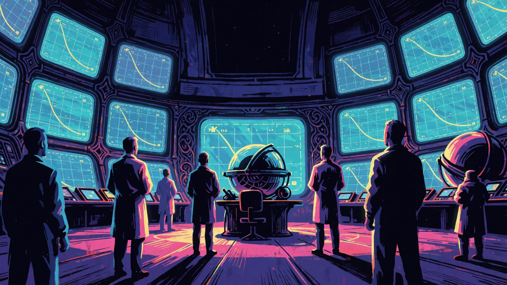
SLIDE 3
Then it changed course. Not much, and not all at once. It changed as it came closer, and it kept changing, and every correction pointed further in.
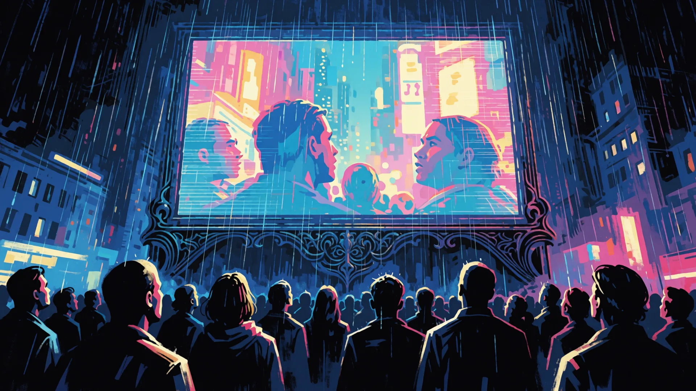
SLIDE 4
Then came September 11, 2028... The world was told the truth. For about a week, it was restless.
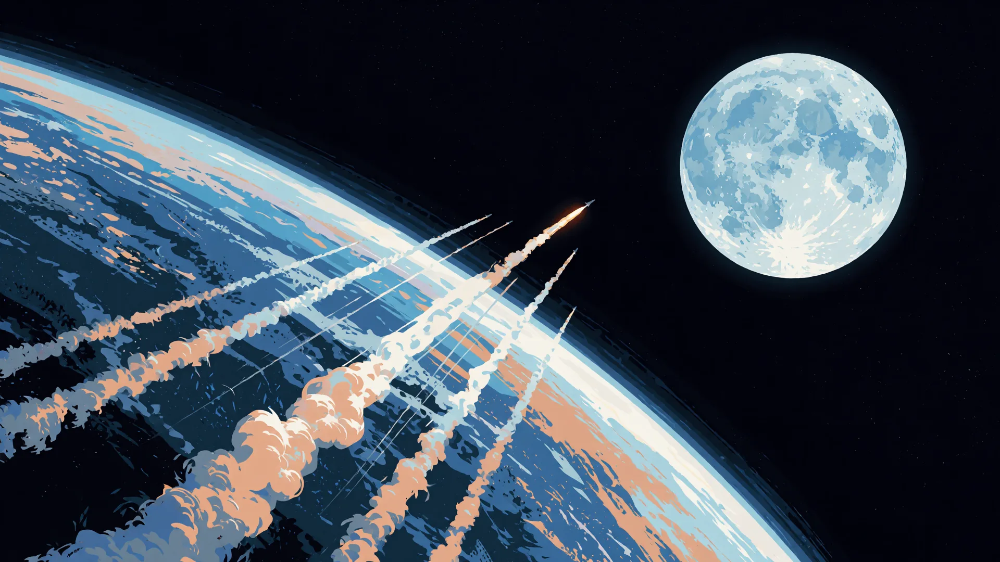
SLIDE 5
While families gathered for one last somber holiday season, the greatest minds went to work, building on decades of anticipated preparation.
SLIDE 6
The world's leaders were so confident in their solution, they declared the arrival date the first global holiday for the human race.
SLIDE 7
And so on April 13th, everyone stepped outside to watch humanity take on its biggest challenge yet...
SLIDE 8
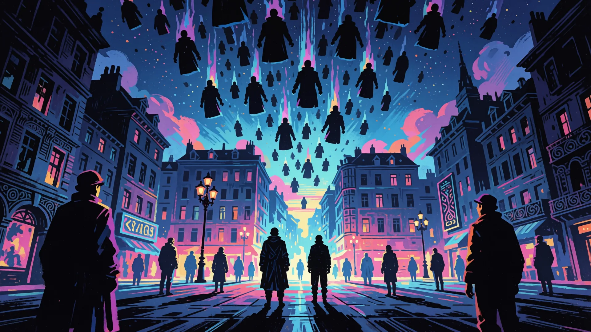
SLIDE 9
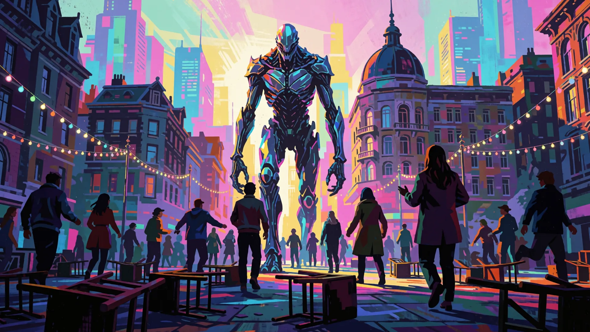
SLIDE 10
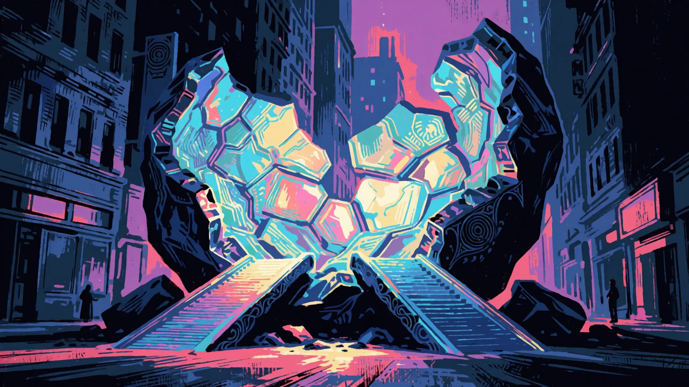
SLIDE 11
Aliens. As the Xeno used the meteor as a trojan horse, Earth became infected with the hostile presence of ruthless warriors here to take the planet.
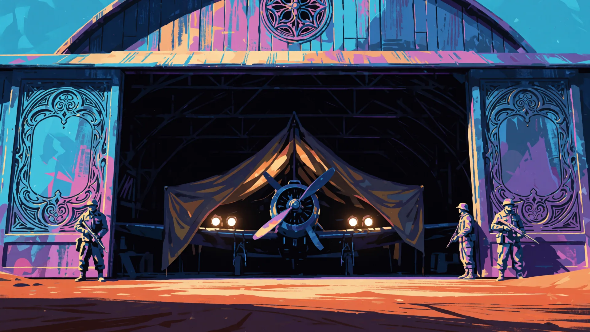
SLIDE 12
But ever since 1947, we knew we were not alone. And ever since 1959, when the world's governments established Antarctica as a planetary defense research facility, we have waited for this moment.
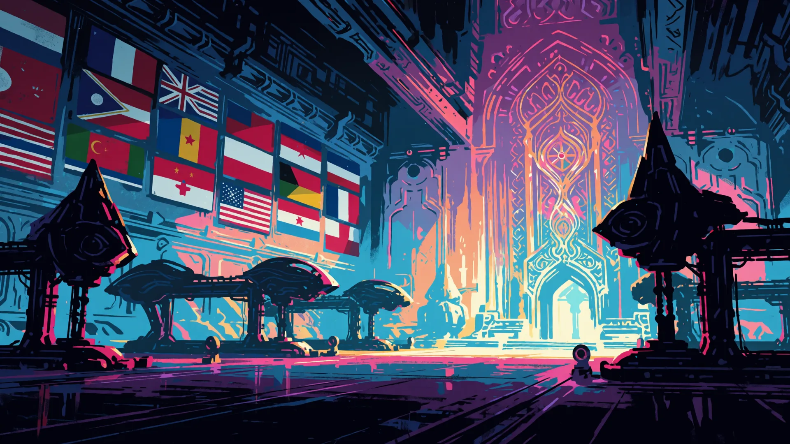
SLIDE 13
And through reverse engineering and ingenuity...
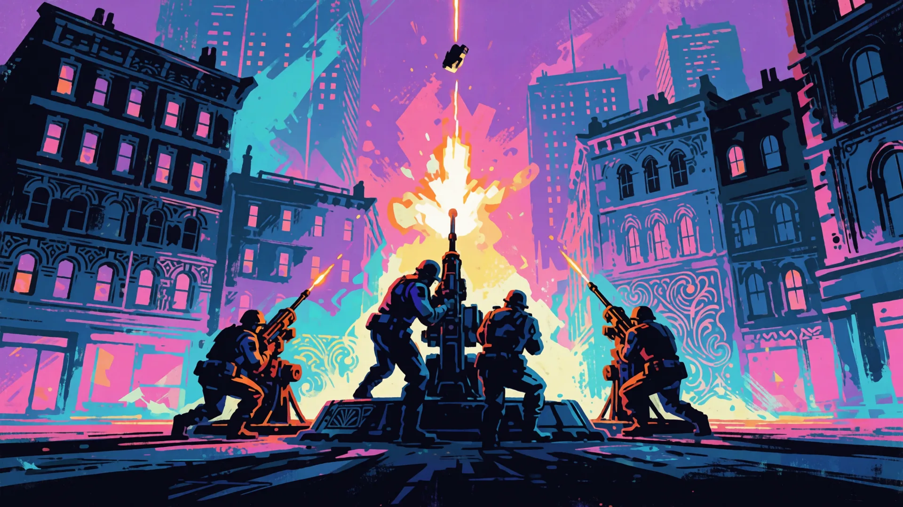
SLIDE 14
We have been building that very arsenal for over 80 years... Not for a rock...
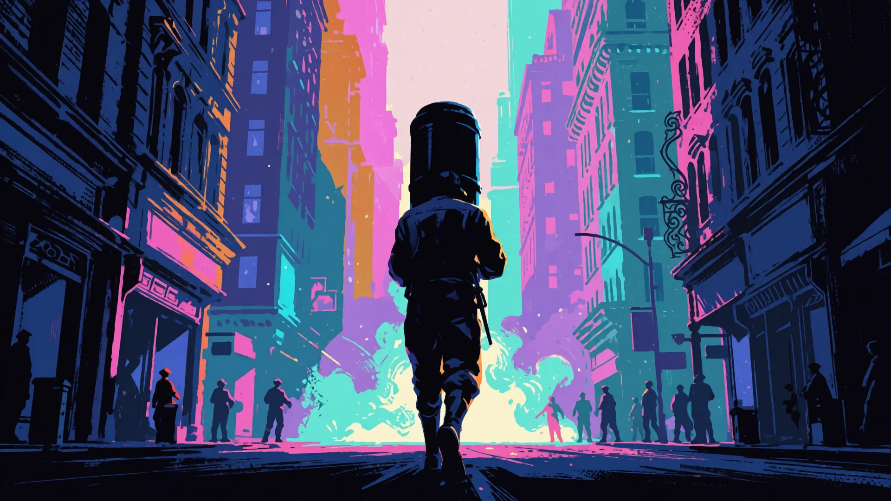
SLIDE 15
But for ANYTHING... and as humans we realized... we had to save ourselves.
WHAT THIS ACT ISThe road out of our own system, in the order the solar system allows. Earth under the fall, then the Moon, then Mars, and then the belt turns you back, so you go INWARD to Venus and Mercury for the thing that opens it. Then Jupiter, and Saturn, where the Hungry keep a door. It ends inside a six-sided storm at the pole, on the machine they have been crossing by the whole time.
WHEN THE ACT ENDSApril 2029. The solar system is ours, rock to rock, for the first time since anybody has been writing it down. And under the rings of Saturn, inside a six-sided storm that is not weather, we found the door they have been using the whole time. It is still turning.
WHAT THE PLAYER IS LEFT HOLDINGNobody is coming, and waiting is just a slower way of losing. There was a door in our own sky and not one of them mentioned it. A species this small stops being somebody else's schedule by going out and not stopping.
EARTH: whatever came out of the rock, and a great deal of it. Survive.
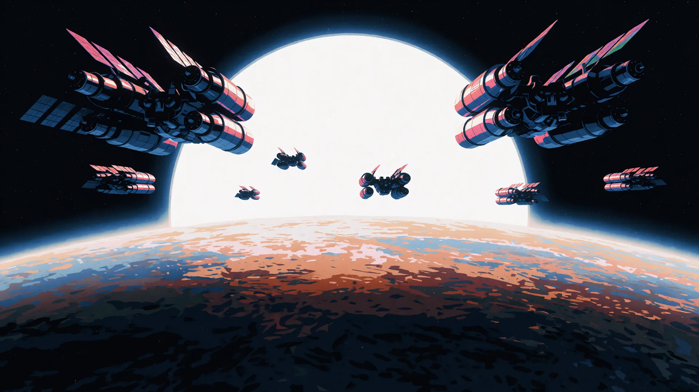
APPROACH
EARTH. This is the day. The rock is gravel over our heads and the gravel had passengers. Everything we thought we were surviving was the delivery.
THE GROUND
The fragments came down whole over the harbour district and split open in the streets. Whatever had been riding inside Apophis was already awake when it landed.
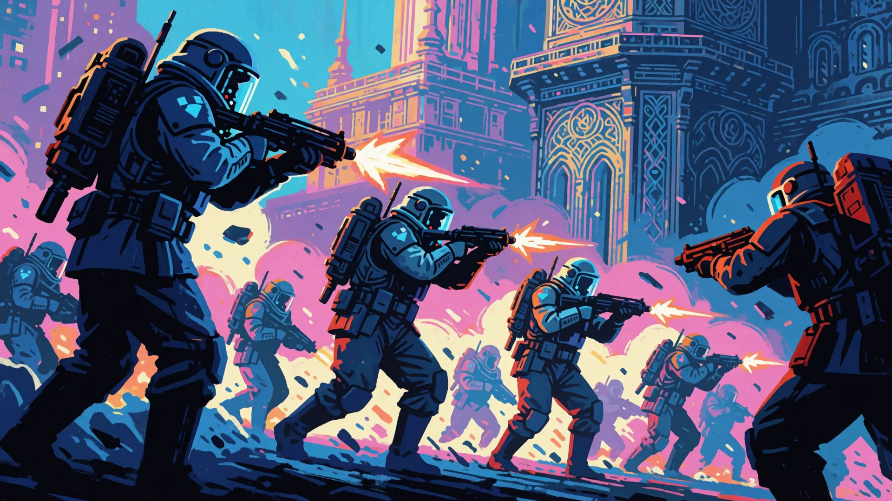
THE ASSAULT
The same intercept batteries that broke the rock are swung round now, depressed to fire along their own avenues, and every shelter door in the district is sealed from the inside.
BATTLE
AFTERMATH
The district is ours and the hulls are cooling in the street. We counted what came out of them. We are not releasing that number yet.
NEW ORDER
The city is cleared and the hulls are dragged into the squares where anyone can walk up and look inside. Let every government that knew explain the seating.
LUNA: abandoned depots on the far side, the Hungry already inside them, and then the Vigil wakes.
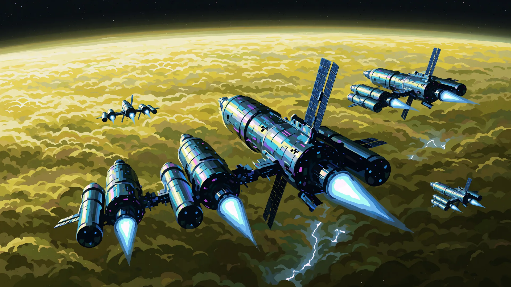
APPROACH
LUNA. This is the one. The far side, the dish, the thing that was listening to us the whole time. Everything since the rock has been travel.
THE GROUND
No signal from Earth has ever reached the far side. The relay dish sits half sunk in the regolith, and it was still warm when the first human crew found it.
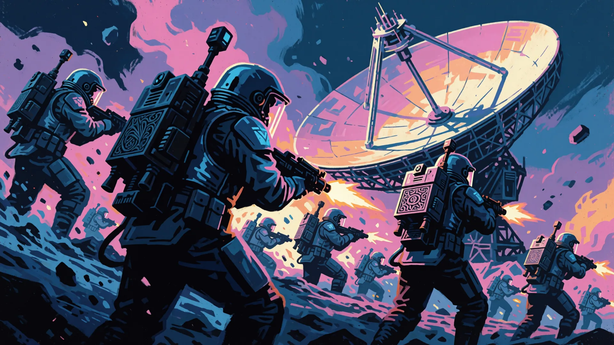
THE ASSAULT
Hardpoints are buried in the basin rim and mass drivers run along the berms. Whoever built the dish built the guns as well, and did not build them for us.
BATTLE
AFTERMATH
The dish is cracked and dark and standing on our side of the line. Ten thousand years of somebody else watching, ended in about forty minutes.
NEW ORDER
The dish is ours, aimed back the way it came. We are the ones listening now, and we have not decided yet what that makes us.
MARS: the Hungry hold the trench, and the machines are working the same ground.
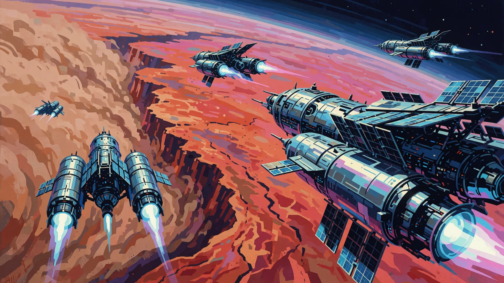
APPROACH
MARS. Mars was the practice run. Everything we know about living somewhere that wants us dead, we learned in that trench.
THE GROUND
They dug the habitat trench along the floor of Valles Marineris, four kilometres of cliff on either side, and once a season a dust storm closes the sky over it completely.
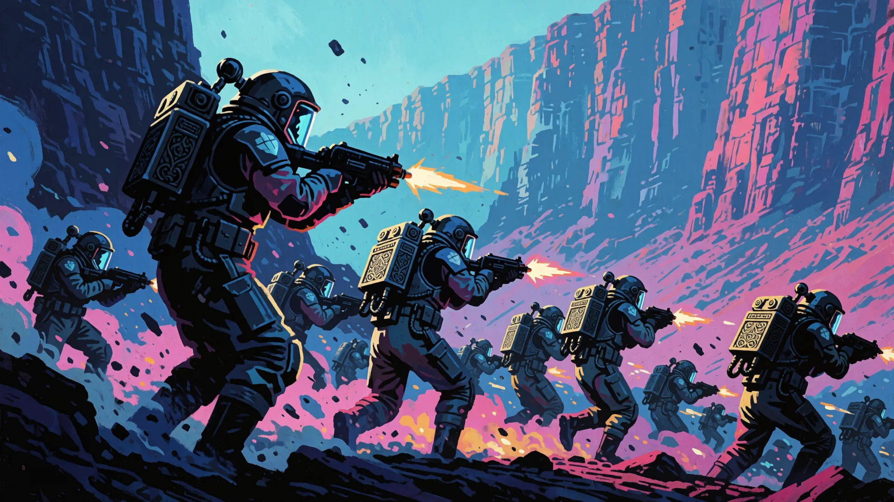
THE ASSAULT
Gun galleries are cut straight into the canyon walls and fire down onto the floor. Whoever built this trench expected to be outnumbered in it.
BATTLE
AFTERMATH
The trench line held longer than the manual says it could, and it was ours by the second dust fall. We buried theirs beside ours. Same trench.
NEW ORDER
Valles Marineris is lit end to end again. The oldest colony off Earth, and the first one we ever had to take back.
VENUS: a Federation station that has been in our sky the whole time.
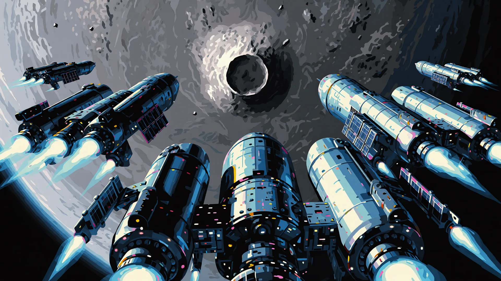
APPROACH
VENUS. Fifty kilometres up is the only altitude on this planet where a person can live. Everyone who is about to fight us knows it too.
THE GROUND
The city floats fifty kilometres up, moored to nothing, riding the one layer of this atmosphere that will not crush a hull. Nobody has ever stood on the ground below it.
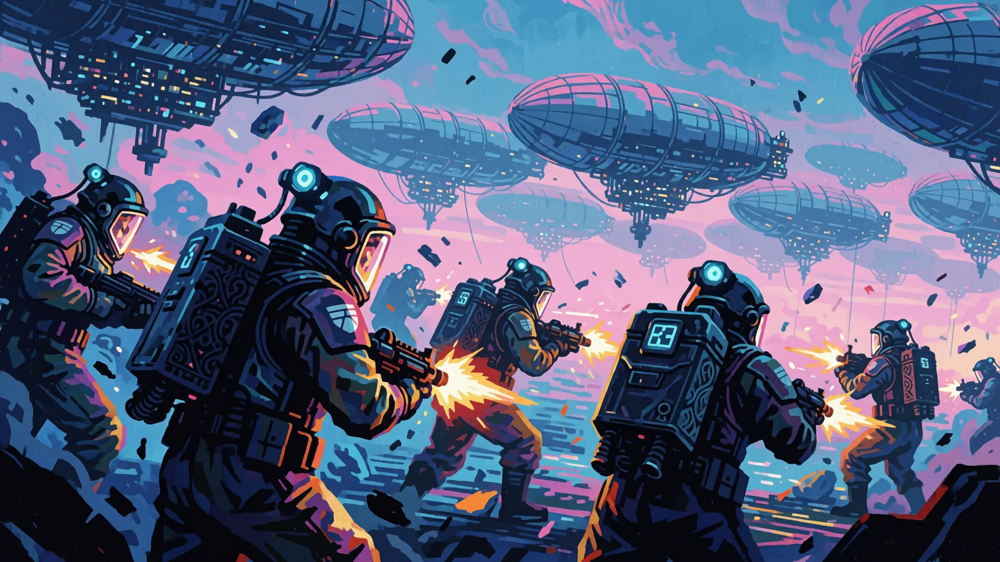
THE ASSAULT
Gun blisters are set straight into the pressure hulls, and the mooring towers have been eaten half through by acid. Everything here is one bad seam away from falling for an hour.
BATTLE
AFTERMATH
The platforms are ours and most of them are still flying. We cut the moorings we had to and we are not pretending that was cheap.
NEW ORDER
The sky is re-moored and the haze traffic runs again. We are the third power to own this sky and the first to publish the tonnage.
MERCURY: the machines are already here, in numbers, around the ring.
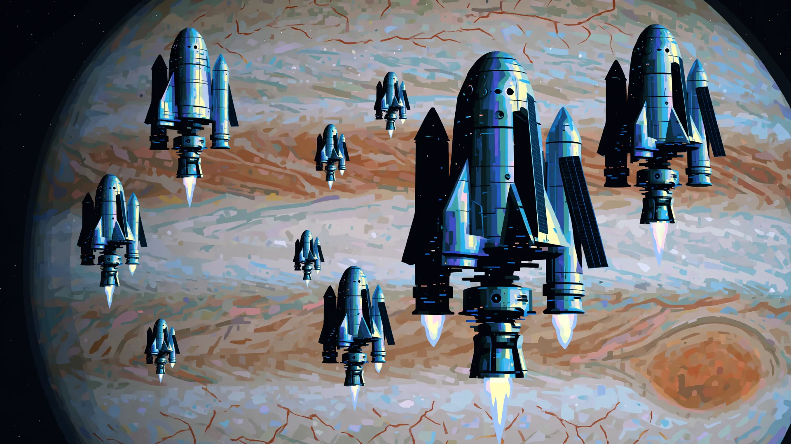
APPROACH
MERCURY. The belt turned us back twice. Whatever is buried in Caloris is the reason we came inward first instead of pushing out.
THE GROUND
Nothing survives the day side, so everything here is built in the terminator or under it. The iron core of this world is the largest in the solar system for its size, and somebody wound it.
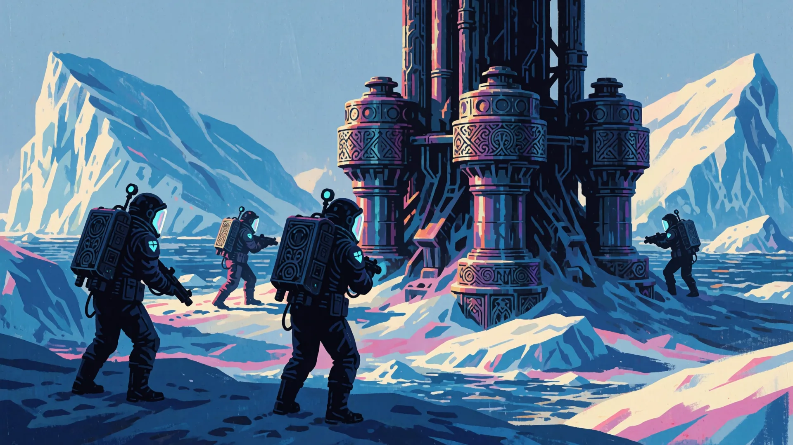
THE ASSAULT
Sun-side batteries that run on more power than they can spend, and shutter walls that close ahead of the terminator as it crawls around the planet.
BATTLE
AFTERMATH
The basin is open. There is a ring down there, kilometres across, wound into the iron, still drawing current after however long it has been sitting.
NEW ORDER
The ring runs. It pushes rock aside, gently, at a distance, and that is a road through the belt. We are going out.
JUPITERREVERSAL · the traffic out here already ends at SaturnOVERRUN · GALACTIC FEDERATION OF LIGHT and GALACTIC FEDERATION OF LIGHT and THE VIGILhuman/act1/JUPITER · js/planetcuts.js:168
JUPITER: a Federation anchorage, and the machines raid it while we are taking it.
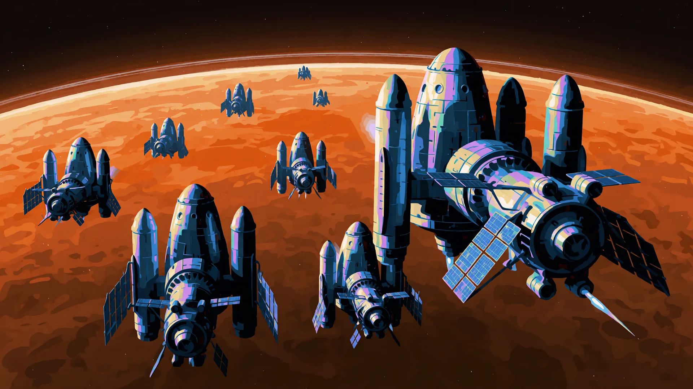
APPROACH
JUPITER. We crossed the belt. First thing we learned out here is that we are late: there is traffic in this system and none of it is ours.
THE GROUND
There is no ground here at all. The anchorage rides the cloud decks between storm bands, tethered to nothing, and the radiation would kill an unshielded crew inside an hour.
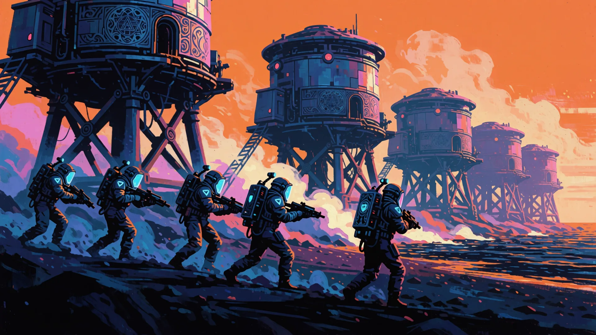
THE ASSAULT
Storm-band batteries slung under the anchorage hulls, and mag-shields holding the radiation off that must never be dropped, which is exactly what makes them worth shooting at.
BATTLE
AFTERMATH
The anchorage is ours and we have their routing. All of it goes to Saturn. There is a base under those rings and it has been there longer than we have had writing.
NEW ORDER
The anchorage holds and the shields are up. We know where they live now. We also know we cannot reach it: the ice giants are lit, and everything that passes them stops working.
SATURN: the Hungry seat and their commander. The scavengers hit it at the same time, for the door.
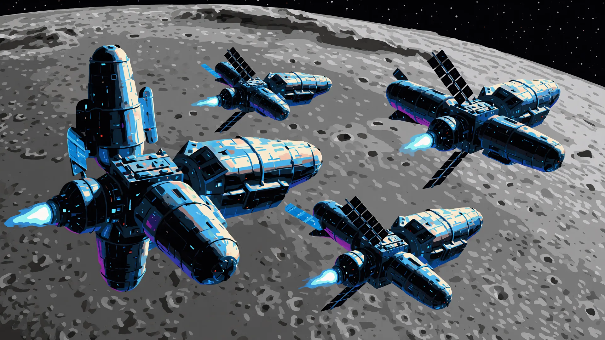
APPROACH
SATURN. The ice giants are dark. We broke the wards, and there is nothing between us and whatever has been sitting under these rings.
THE GROUND
The rings throw a shadow across the whole approach, and at the north pole a six-sided storm has been turning in the same place for as long as anyone has had a lens to point at it. It is not weather. Nothing else in the sky has corners.
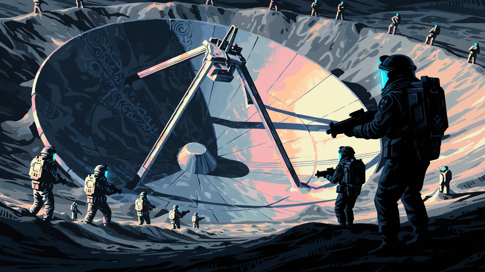
THE ASSAULT
Ring-shadow batteries firing up through the gaps, and the hexagon itself, which is a standing wave with six faces and will take a ship apart if it closes while you are inside it.
BATTLE
AFTERMATH
We are inside the hexagon. It is not a storm. It is a machine the size of a continent and it has been running since before anything on Earth stood upright.
NEW ORDER
It is a door. Six oscillators in a ring, spun until the space inside them twists and simply stops being anywhere. That is how everything reached us so fast. That is how we go out.
WHAT THIS ACT ISThe free roads, which are not an empire but an absence of one. Wreck yards, an unlicensed refinery, an anchorage on no chart, a toll gate, a sanctuary that has never asked anyone for papers. Humanity came to liberate a network and finds that liberating it means deciding whose rules replace none at all. The Quartermaster prices the resupply and sees a fence.
WHEN THE ACT ENDSThe Disclosure files travel with the fleet. Every page re-read by people who now know what redaction smells like. Somewhere in those pages is a signature. Human. Dated 1953. The whole truth left names out, and we are going to find them.
WHAT THE PLAYER IS LEFT HOLDINGAdaptation is not consent. Worlds we free start needing us, and needing us is how it began the last time.
PROXIMA d. Every ship we have lost out here ended up in that yard, and some are still on the manifest as missing. Two of them were escorting the intercept.
OLD ART · NOT THIS PLACE
THE GROUND
Ships come here to die. The hulls lie in lanes sorted by whoever built them, a hundred different yards, all of them cut open, under a red sun that makes every shadow look like a hole.
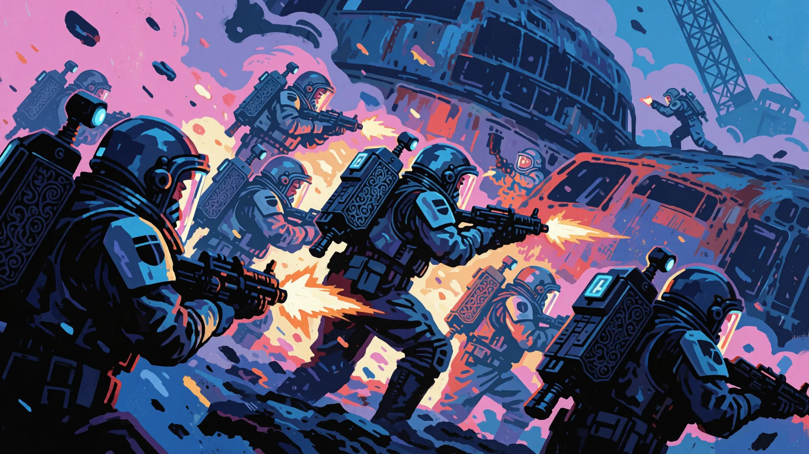
OLD ART · NOT THIS PLACE
THE ASSAULT
Yard cranes and cutting gantries are turned outward, with hull plate stacked into walls between them. Nothing here was designed as a fortification and all of it is being used as one.
BATTLE
OLD ART · NOT THIS PLACE
AFTERMATH
The stacks came down on top of each other and burned for most of a day. We recovered nine hulls and four sets of remains.
OLD ART · NOT THIS PLACE
NEW ORDER
The yards sort and run properly now. Ships go out of here whole, which is the first time that sentence has ever been true.
PROXIMA b. One band of liveable ground on the whole planet and it never moves. Everything anyone here has ever built sits in a line you could walk in a day.
OLD ART · NOT THIS PLACE
THE GROUND
This world has not turned since it formed, so the town runs the long way along the only ground that is neither burning nor frozen. It is permanently sunset here and it always will be.
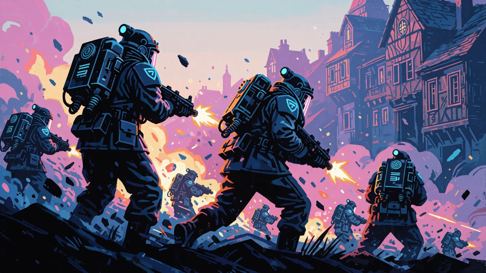
OLD ART · NOT THIS PLACE
THE ASSAULT
Ridge batteries are dug in along the sunset line, and shutter walls on both faces can close the town against the day side or the night side, whichever is trying to get in.
BATTLE
OLD ART · NOT THIS PLACE
AFTERMATH
We hold the ridge. The town is ours from the ice end to the burning end, and both ends are exactly where they were this morning.
OLD ART · NOT THIS PLACE
NEW ORDER
The strip runs the full length of the light again. The shutter walls stay open now, which the people who live here tell us has not been true in years.
PROXIMA c. They crack volatiles out here because it is too far out for anyone to bother stopping them. That logic held right up until today.
OLD ART · NOT THIS PLACE
THE GROUND
The plumes freeze on the way down out here and fall back as snow made of whatever the towers were trying to sell. The whole surface is blue ice.
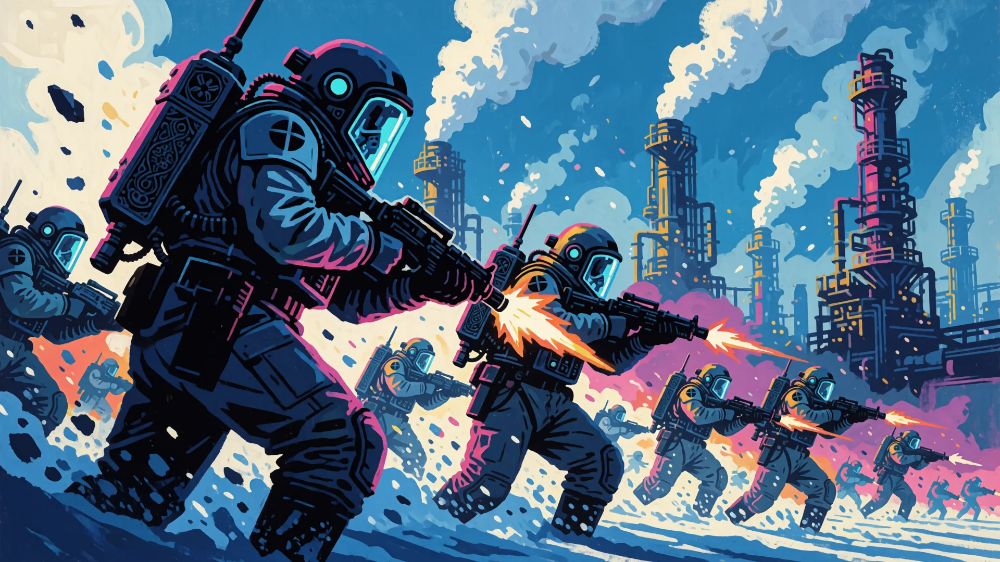
OLD ART · NOT THIS PLACE
THE ASSAULT
Ice breach batteries ring the cracking towers, and the pipe runs are armoured under banked snow that has to be cut open before anything can be repaired.
BATTLE
OLD ART · NOT THIS PLACE
AFTERMATH
Towers are down across the ice. The plumes went out one after another and you could watch it happening from orbit.
OLD ART · NOT THIS PLACE
NEW ORDER
The towers vent again and there are roads cut between them now. Somebody will still be selling this ice long after we have gone home.
THE FLARE SHELTER. They live under the ground here because the sun tries to kill them on a schedule. We are attacking during the quiet part of that schedule.
OLD ART · NOT THIS PLACE
THE GROUND
The star strips this surface bare most days, so everyone here lives under metres of rock. The only thing above ground is hatches.
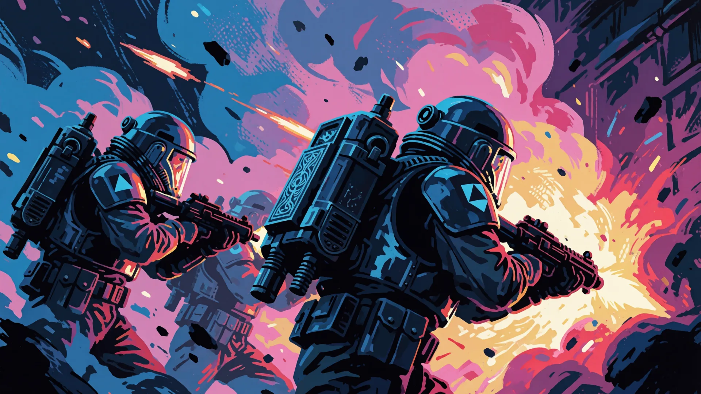
OLD ART · NOT THIS PLACE
THE ASSAULT
Hatch batteries sit flush with the stone, and the shutter doors are heavy enough to hold the sky out, which is what they were built for and not for this.
BATTLE
OLD ART · NOT THIS PLACE
AFTERMATH
Hatches are open, one after another, all the way down. The flare came over while we were still in the shafts and we felt it through the rock.
OLD ART · NOT THIS PLACE
NEW ORDER
Every hatch is reseated and they have dug deeper than they were. The star can do what it likes to the surface now.
THE NARROWS. Everything that goes to Sol or comes out of it passes through that lane, and somebody has been charging for it the whole time.
OLD ART · NOT THIS PLACE
THE GROUND
One clear lane runs through the debris of a triple star, and somebody has strung a toll gate across it on cables. Ten thousand rocks tumble past on either side.
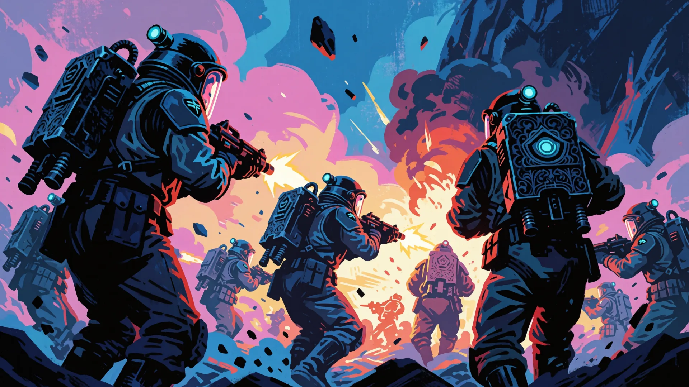
OLD ART · NOT THIS PLACE
THE ASSAULT
Lane batteries sit on the platforms and mine curtains hang on the cables between them, so the gate closes by getting in the way rather than by shooting.
BATTLE
OLD ART · NOT THIS PLACE
AFTERMATH
The ring is in pieces. Platforms are tumbling off into the rocks and the cables went slack and took two more with them.
OLD ART · NOT THIS PLACE
NEW ORDER
The lane is open and we left the gate lit. It is a mark to steer by now. Nobody pays to use the only road there is.
THE DARK LOCKER. Forty years of cargo nobody would put on a manifest, stacked inside a rock. We are told some of it is ours.
OLD ART · NOT THIS PLACE
THE GROUND
Out here the star is just another point in the sky. They cut a vault into the rock and stack whatever cannot be written down in the cold.
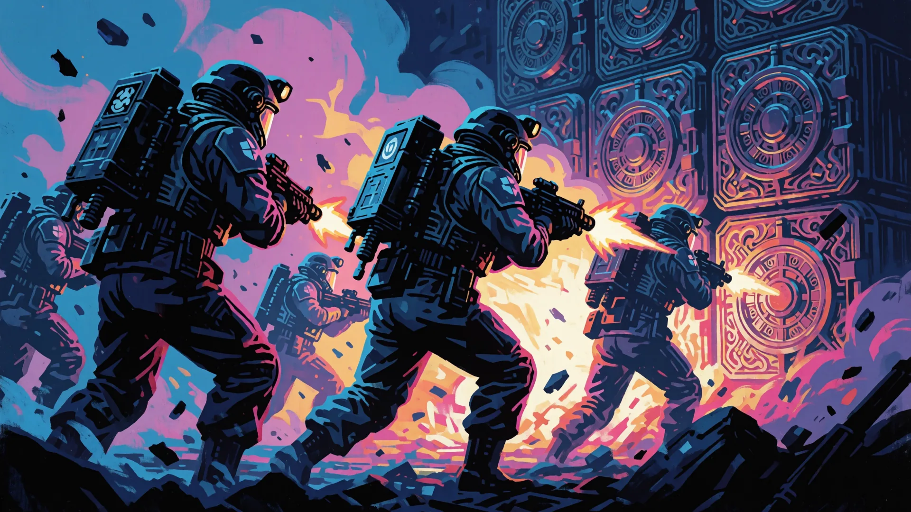
OLD ART · NOT THIS PLACE
THE ASSAULT
Vault batteries are cut into the rock face and the pressure doors are thick enough to count as walls, because all of this was built to keep people out rather than to fight them.
BATTLE
OLD ART · NOT THIS PLACE
AFTERMATH
The face is blown in and the stacks are open. Half of this is Hungry freight and it moved on pirate hulls. Not stolen. Booked.
OLD ART · NOT THIS PLACE
NEW ORDER
It is sealed and running again, and the catalogue is public. Every crate has a line anyone can read, including the ones naming our own ports.
PROXIMA GATE. First port out of Sol. Every ship that ever went missing on us has been through here, and so has every ship that ran cargo for the rock without being told what it was.
OLD ART · NOT THIS PLACE
THE GROUND
Everyone who arrived with nowhere else to be built a piece of this harbour, over sixty years, out of salvage. It is the first port out of Sol, and the ships moor under a roof of stone.
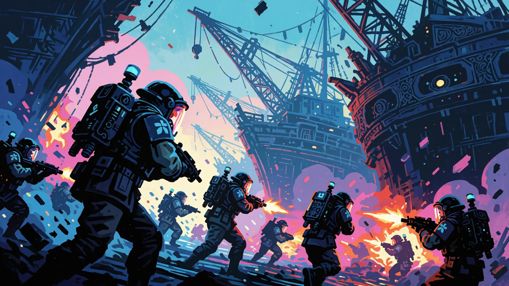
OLD ART · NOT THIS PLACE
THE ASSAULT
Harbour batteries are set into the rock roof, and a boom crosses the bay mouth strung wreck to wreck, made from the ships of people who are not here to object.
BATTLE
OLD ART · NOT THIS PLACE
AFTERMATH
The boom is cut and the harbour is burning and there are people in the water with nowhere to go. We are pulling them out.
OLD ART · NOT THIS PLACE
NEW ORDER
The bay is full and the boom stays down. We do not hold this place. We only made sure the door stays open, which is what it was for.
WHAT THIS ACT ISThe Hungry's home, and the machinery of the harvest itself: the pens, the rendering yards, the gene vaults where every farmed species is filed, including ours. The hardest act to look at. It ends at Serpo, where twelve people were traded one way and never spoken of again, and where their names go up at the gate in letters a metre high.
WHEN THE ACT ENDSThe seats fall one by one, and each defeated commander says the same thing in a different way: you were made for this. They mean it as a compliment. It is the oldest insult ever paid to us, and we are done being anyone’s best work.
WHAT THE PLAYER IS LEFT HOLDINGThe grievance and the gift are one object. Every trait that keeps us alive out here was a line item in somebody else programme.
ZETA-1 b. This is where they kept people. Not a metaphor, not a translation error. Pods, rows of them, and a floor that breathes. Go in.
THE GROUND
The pods run to the horizon in every direction, sunk into a floor of living chitin, glowing, and quiet. This is where the Hungry keep what they have taken.
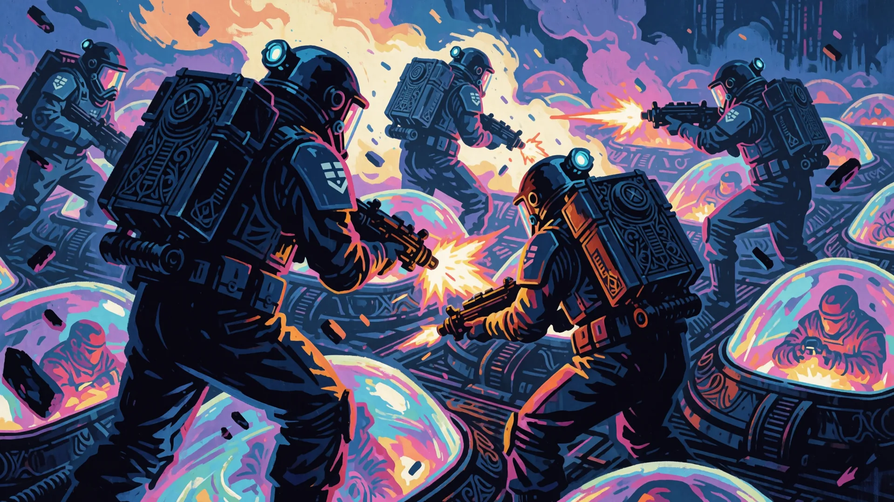
THE ASSAULT
Sphincter gates close over the pod rows on reflex, and growth batteries are seated in the ribs of the floor itself.
BATTLE
AFTERMATH
The pods are open and dark. We got four thousand out. The number that was in there before we arrived is a different number and we have it.
NEW ORDER
The pens are cut out and the floor is stripped back to rock. We could have used the structure. Nobody wanted to.
ZETA-2 d. Everything the Hungry have ever taken is written on those walls, and they have been writing about us for a very long time.
THE GROUND
Every wall in this chamber is a living record of what has been taken and from whom. It lights violet from the inside, through a crack in the shell.
THE ASSAULT
Vault-mouth batteries and ribbed seals guard that crack, which is the only way in and has been the only way in for four thousand cycles.
BATTLE
AFTERMATH
The vault is ours and the wall is lit. Earth has an account in here and it is not marked stolen. It is marked SUPPLIED, and there is a signature under it.
NEW ORDER
The ledger is public now, every line of it. The Earth page is at the front. We have not finished reading the signature and we are not going to stop.
SERPO. Twelve went out. The file says twelve. It does not say how many came back and the crews have all done the arithmetic. Set down outside the wire.
THE GROUND
Human habs stand in alien sand under two suns, prefabricated and still bolted down. They went up for an exchange programme that ran one way and was never spoken of again.
THE ASSAULT
Perimeter batteries cover the compound, and there are membrane nests buried in the sand outside the wire that were not there when the habs were built.
BATTLE
AFTERMATH
The habs are flat and the sand around them is glass. We found the roster. We found where they kept the roster. Both of those are in the report.
NEW ORDER
The compound is rebuilt and the record of who was traded here is posted at the gate in letters a metre high. Twelve names. All twelve.
WHAT THIS ACT ISMarch into the machinery of the people who watched and did nothing. The hymn foundry that certifies a world as protected, the archive of the forty, the tribunal, and the sunken vaults where Earth's own file was stamped Deferred three times. Humanity arrives to read the paperwork and leaves having published all of it.
WHEN THE ACT ENDSThe freed worlds ask for our standards, our filters, our fuel. Saying yes is mercy. Saying yes is also how it started last time. Nobody signed anything. Nobody had to. The Quartermaster keeps drawing up supply contracts that look like fences.
WHAT THE PLAYER IS LEFT HOLDINGA secret kept by the powerful is a weapon pointed at whoever was not told. Publishing it is the only way to take the weapon away.
MAIA. They make the songs here. The ones sung over a world just before its file is stamped DEFERRED. We have heard the recording.
THE GROUND
They cut the hymns here that certify a world as protected. The pipes stand upright in nebula light, tuned, taller than towers, and they are singing when you arrive.
THE ASSAULT
Choir-ring emplacements are braced between the pipes, and the hard-light buttresses ring aloud when they are struck. The defence and the instrument are the same object.
BATTLE
AFTERMATH
The pipes are down. We broke a musical instrument the size of a cathedral, and we have not worked out how to feel about it yet.
NEW ORDER
The foundry is re-cut and sounding, and the first world it certified was Earth. Eighty years late. We had it sung anyway.
MEROPE. They have been saving seed for worlds that were never permitted to grow. We would like ours back, if it is in there.
THE GROUND
They bank seeds here for worlds that have not been allowed to grow yet, terraced under hard-light panels in the brightest part of the cluster.
THE ASSAULT
Garden-wall emplacements and irrigation towers have been turned into firing points. Every shot fired here costs somebody a harvest ten thousand years out.
BATTLE
AFTERMATH
We fought across a garden. Half the terraces burned and every vault held, which is the only sentence in this report worth reading.
NEW ORDER
The garden is replanted, and the vaults ship instead of store. Earth stock went out on the first run. Eighty years in a drawer.
CELAENO. This is where they judge each other. We have read the transcripts, and we have questions about the acquittals.
THE GROUND
This is where the Federation tries its own. The benches ring an open floor in tiers, under the dimmest star in the cluster.
THE ASSAULT
Gate batteries cover every entrance and hard-light barricades cross the bench tiers. A court built to be defended is a court that expected to be hated.
BATTLE
AFTERMATH
The benches are split and the floor is cracked straight across the middle. Symbolism was not the intent. It is going to be the story.
NEW ORDER
The tribunal sits again, and the benches face outward now, toward the room. Small change. Nobody in there thinks it is small.
STEROPE. Every promise anyone ever made about Earth is filed behind a door down there that nobody has opened. We are going to open it.
THE GROUND
Every door down here is stamped, dated, and has never once been opened. Two dim stars barely light the ground above the chambers.
THE ASSAULT
Vault-door batteries and hard-light seals hold the chambers shut. Wardens maintained them for a century without ever reading what they were guarding.
BATTLE
AFTERMATH
The chambers are open. Our protection order is in here and it was GRANTED. Granted, and then withdrawn eleven months later, by a hand nobody will name.
NEW ORDER
Every deferral in there has been copied out and sent to the world it concerned. Ours went first. Two pages, and one of them is a signature.
WHAT THIS ACT ISA civilisation of machines executing orders no maker ever signed, around a star being slowly boxed in. Humanity finishes the swarm on its own plan, aims the relay back up the chain the orders came from, and decides where the light of a star goes. Undeniable, at last, and now answerable for it.
WHEN THE ACT ENDSThe fleet runs on their engines, past their safety lines, hotter than they ever dared. That is why we are winning. The governors were never limiting the machines. They were keeping the operator human. We have been past that line for a year.
WHAT THE PLAYER IS LEFT HOLDINGThe governors were never limiting the machines. They were keeping the operator human, and we crossed that line to win.
SIRIUS A I. Rows of machines standing in a garden, dusted and straightened, and not one of them has moved in a thousand years. Somebody still weeds it.
OLD ART · NOT THIS PLACE
THE GROUND
Ten thousand machines stand in rows on these terraces, pruned and aligned and facing the same way. None of them are awake and every one of them is maintained.
OLD ART · NOT THIS PLACE
THE ASSAULT
Terrace batteries sit between the rows and hard-light barriers run along the garden walls. They light when the garden is approached, and they have been lighting for a very long time.
BATTLE
OLD ART · NOT THIS PLACE
AFTERMATH
We came up the terraces and the barriers lit as we crossed them. Nothing in the rows so much as turned its head.
OLD ART · NOT THIS PLACE
NEW ORDER
The rows are straightened and the garden keeps itself. We left it as we found it, because there was no way to tell what leaving it alone meant.
SIRIUS A II. It is still making them. Nobody has ordered anything, nobody is collecting them, and the line has not stopped.
OLD ART · NOT THIS PLACE
THE GROUND
The casting halls have not stopped. They turn out identical units one after another under a star that never sets, and the canyon floor glows with it.
OLD ART · NOT THIS PLACE
THE ASSAULT
Canyon batteries line the hall roofs, and pour gates can flood the whole floor with molten metal, which is a defence and also simply how the halls are emptied.
BATTLE
OLD ART · NOT THIS PLACE
AFTERMATH
The halls are open and the floor is running white hot. We took the roofs and let the pour go where it wanted.
OLD ART · NOT THIS PLACE
NEW ORDER
The halls pour again on a faster count than before, which we did not ask for and cannot switch off. The units coming off that line are the same build as the ones that walked out of the rock.
THE ASH FIELD. They filed their records in the remains of their own star. There is no part of that we are comfortable with.
OLD ART · NOT THIS PLACE
THE GROUND
This grey plain was the outer body of a star before the companion collapsed and threw it across the system. They stood their memory cores up in it like headstones.
OLD ART · NOT THIS PLACE
THE ASSAULT
Core row batteries cover the stacks and dust berms are banked between them, so every firing line is also a trench full of the ash of something that used to be a sun.
BATTLE
OLD ART · NOT THIS PLACE
AFTERMATH
Cores lie split open through the ash and the dust does not settle, it only hangs.
OLD ART · NOT THIS PLACE
NEW ORDER
The stacks are back in rows and the cores are closed. We read three of them. We are not going to say what was in them.
SIRIUS B I. They keep their own failures in a building with the locks on the outside. Whatever is behind those doors was made by the people who locked them.
OLD ART · NOT THIS PLACE
THE GROUND
They keep the ones that failed inspection here, in sealed white halls in orbit of a white dwarf. Every door locks from the outside and none has ever been opened from within.
OLD ART · NOT THIS PLACE
THE ASSAULT
Hall batteries cover the seals and containment shutters drop between every corridor, built to stop something getting out and now holding something back.
BATTLE
OLD ART · NOT THIS PLACE
AFTERMATH
The seals are blown and the shutters jammed halfway. The halls are open and they are empty, and we did not open them.
OLD ART · NOT THIS PLACE
NEW ORDER
The halls are sealed again and the standard is higher than it was. We put the locks back on the outside because we could not think what else to do.
THE DIAMOND SHELF. They named a place after what it turns into in a billion years. That tells you everything about who we are fighting.
OLD ART · NOT THIS PLACE
THE GROUND
The carbon under this shelf will turn to crystal one day, in an age nobody here will measure. They named the place for what it will be and built their repair yards on it.
OLD ART · NOT THIS PLACE
THE ASSAULT
Shelf batteries are anchored down into the carbon and the cradle clamps double as blast frames, because a thing built to hold a machine still while it is mended will hold it while it is shot at.
BATTLE
OLD ART · NOT THIS PLACE
AFTERMATH
The gantries came down across their own cradles and the clamps sheared. There were machines in those cradles, half mended.
OLD ART · NOT THIS PLACE
NEW ORDER
The gantries are up again and taller than before. Still not diamond. It will be, apparently, and they intend to be here.
THE COMPANION. This is where the orders come down. Not where they come from. Even the machines here only ever receive.
OLD ART · NOT THIS PLACE
THE GROUND
Every standing order in this system comes down that mast, and nobody at the yard knows where the orders come in. The white dwarf fills half the sky behind it.
OLD ART · NOT THIS PLACE
THE ASSAULT
Yard batteries ring the mast base and relay shutters can blind the whole line at once, which has never been done, because nothing has ever needed the line to stop.
BATTLE
OLD ART · NOT THIS PLACE
AFTERMATH
The mast is down across its own yard. The line should be dead. Every machine in this system took its next instruction on time anyway.
OLD ART · NOT THIS PLACE
NEW ORDER
The mast is up and the orders are running, which changes nothing, because they never stopped. We put it back because knocking it down proved it was scenery.
THE DOG STAR. This is the desk it all comes from. We have come a very long way to stand in front of a chair.
OLD ART · NOT THIS PLACE
THE GROUND
This is the hall the orders come from. Tier upon tier of desks under the brightest star in the sky of Earth, every surface clean, and every one of them empty.
OLD ART · NOT THIS PLACE
THE ASSAULT
Hall batteries sit between the desk tiers and instruction gates seal each tier from the next, so taking this building means going down through it one floor of empty desks at a time.
BATTLE
OLD ART · NOT THIS PLACE
AFTERMATH
We went down through it tier by tier and every floor was the same. Desks in rows. Nobody at any of them.
OLD ART · NOT THIS PLACE
NEW ORDER
The orders are still going out. We hold the building they come from and they are still going out. Somewhere in that stream was the instruction that loaded the rock.


 OLD ART · NOT THIS PLACE
OLD ART · NOT THIS PLACE OLD ART · NOT THIS PLACE
OLD ART · NOT THIS PLACE OLD ART · NOT THIS PLACE
OLD ART · NOT THIS PLACE OLD ART · NOT THIS PLACE
OLD ART · NOT THIS PLACE OLD ART · NOT THIS PLACE
OLD ART · NOT THIS PLACE OLD ART · NOT THIS PLACE
OLD ART · NOT THIS PLACE OLD ART · NOT THIS PLACE
OLD ART · NOT THIS PLACE OLD ART · NOT THIS PLACE
OLD ART · NOT THIS PLACE OLD ART · NOT THIS PLACE
OLD ART · NOT THIS PLACE OLD ART · NOT THIS PLACE
OLD ART · NOT THIS PLACE OLD ART · NOT THIS PLACE
OLD ART · NOT THIS PLACE OLD ART · NOT THIS PLACE
OLD ART · NOT THIS PLACE OLD ART · NOT THIS PLACE
OLD ART · NOT THIS PLACE OLD ART · NOT THIS PLACE
OLD ART · NOT THIS PLACE OLD ART · NOT THIS PLACE
OLD ART · NOT THIS PLACE OLD ART · NOT THIS PLACE
OLD ART · NOT THIS PLACE OLD ART · NOT THIS PLACE
OLD ART · NOT THIS PLACE OLD ART · NOT THIS PLACE
OLD ART · NOT THIS PLACE OLD ART · NOT THIS PLACE
OLD ART · NOT THIS PLACE OLD ART · NOT THIS PLACE
OLD ART · NOT THIS PLACE OLD ART · NOT THIS PLACE
OLD ART · NOT THIS PLACE


 OLD ART · NOT THIS PLACE
OLD ART · NOT THIS PLACE OLD ART · NOT THIS PLACE
OLD ART · NOT THIS PLACE OLD ART · NOT THIS PLACE
OLD ART · NOT THIS PLACE OLD ART · NOT THIS PLACE
OLD ART · NOT THIS PLACE OLD ART · NOT THIS PLACE
OLD ART · NOT THIS PLACE OLD ART · NOT THIS PLACE
OLD ART · NOT THIS PLACE OLD ART · NOT THIS PLACE
OLD ART · NOT THIS PLACE OLD ART · NOT THIS PLACE
OLD ART · NOT THIS PLACE OLD ART · NOT THIS PLACE
OLD ART · NOT THIS PLACE OLD ART · NOT THIS PLACE
OLD ART · NOT THIS PLACE OLD ART · NOT THIS PLACE
OLD ART · NOT THIS PLACE OLD ART · NOT THIS PLACE
OLD ART · NOT THIS PLACE OLD ART · NOT THIS PLACE
OLD ART · NOT THIS PLACE OLD ART · NOT THIS PLACE
OLD ART · NOT THIS PLACE OLD ART · NOT THIS PLACE
OLD ART · NOT THIS PLACE OLD ART · NOT THIS PLACE
OLD ART · NOT THIS PLACE OLD ART · NOT THIS PLACE
OLD ART · NOT THIS PLACE OLD ART · NOT THIS PLACE
OLD ART · NOT THIS PLACE OLD ART · NOT THIS PLACE
OLD ART · NOT THIS PLACE OLD ART · NOT THIS PLACE
OLD ART · NOT THIS PLACE OLD ART · NOT THIS PLACE
OLD ART · NOT THIS PLACE